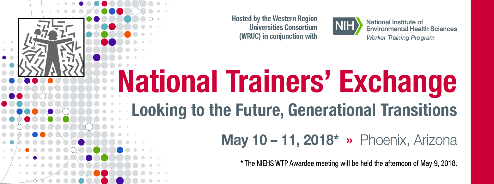
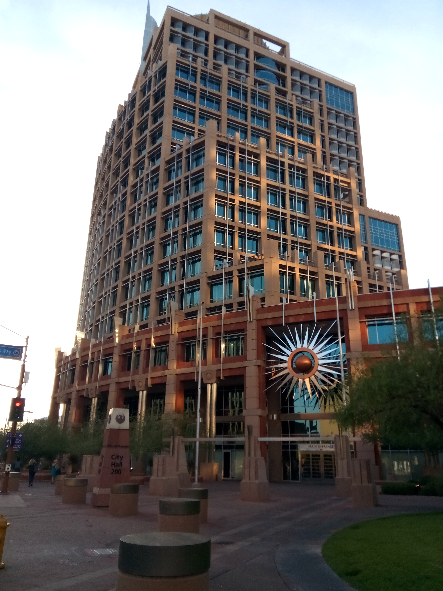

Back to news
Back to news
National Trainers' Exchange
May 9-11, 2018
Phoenix, Arizona

Purpose of the Awardee Meeting The semi-annual WTP Awardee Meeting brought awardees together to provide program updates, exchange information regarding training, and discover new areas of interest to awardees. The semi-annual WTP Awardee Meeting brought awardees together to provide program updates, exchange information regarding training, and discover new areas of interest to awardees.

Cell Podium at the Conference
As an SBIR Phase II awardee, Cell Podium participated at the National Trainers' Exchange conference in Phoenix, Arizona.
Cell Podium presented their first working prototyp of their Hazordous Material Sensor Simulator.
Cell Podium presented their first working prototyp of their Hazordous Material Sensor Simulator. (
Link to Product Description)
This prototyp was developed with the help of a SBIR Phase II Grant from NIEHS WETP. The Rutgers School of Public Health (RSPH) Office of Public Health Practice (OPHP) conducts hands-on exercises that are a vital part of its HAZMAT training programs. A key objective of these exercises is to provide learners with realistic experiences involving (1) hazards, (2) personal protective equipment (PPE), and (3) air monitoring instruments, to assess learner performance in the context of these realistic experiences.
This prototyp was developed with the help of a SBIR Phase II Grant from NIEHS WETP. The Rutgers School of Public Health (RSPH) Office of Public Health Practice (OPHP) conducts hands-on exercises that are a vital part of its HAZMAT training programs. A key objective of these exercises is to provide learners with realistic experiences involving (1) hazards, (2) personal protective equipment (PPE), and (3) air monitoring instruments, to assess learner performance in the context of these realistic experiences.